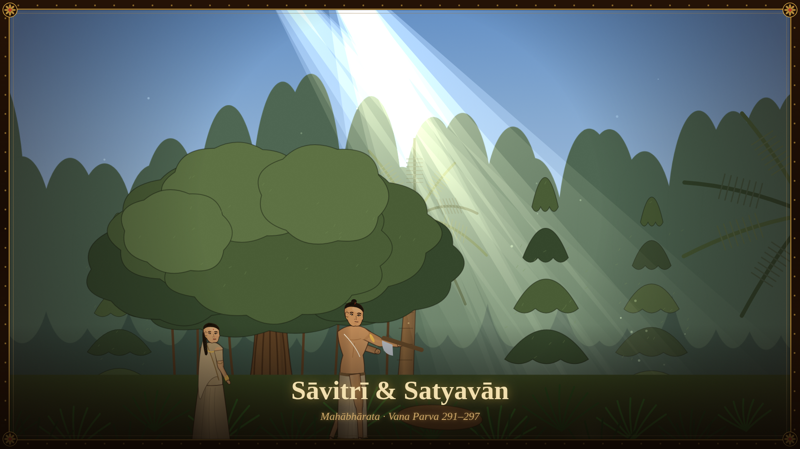
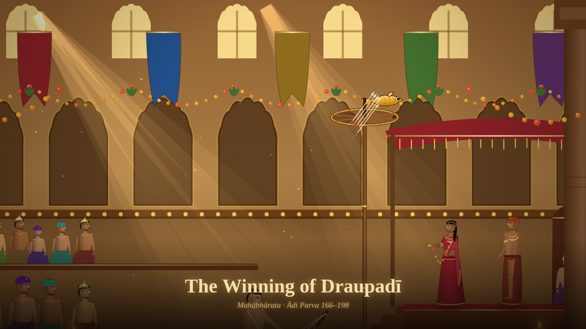
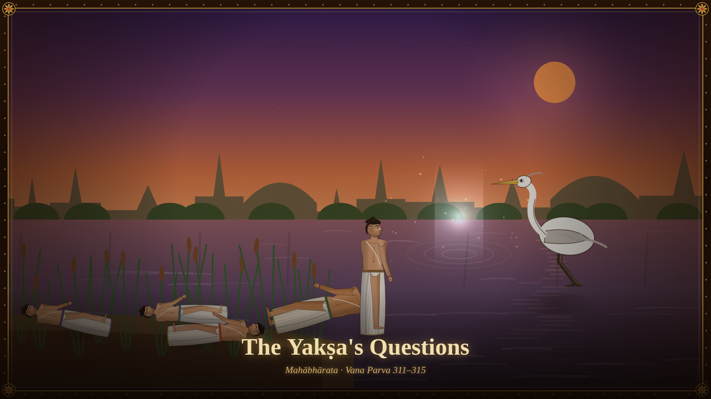

The Hindu
Timeline
— Films
hand-drawn with code from the corpus · no AI imagery
Bhīma and Bakāsura
Mahābhārata · Ādi Parva 159–166
Govardhana
Bhāgavata Purāṇa · Canto X.24–27

Sāvitrī & Satyavān
Mahābhārata · Vana Parva 291–297

The Winning of Draupadī
Mahābhārata · Ādi Parva 166–198

The Yakṣa's Questions
Mahābhārata · Vana Parva 311–315